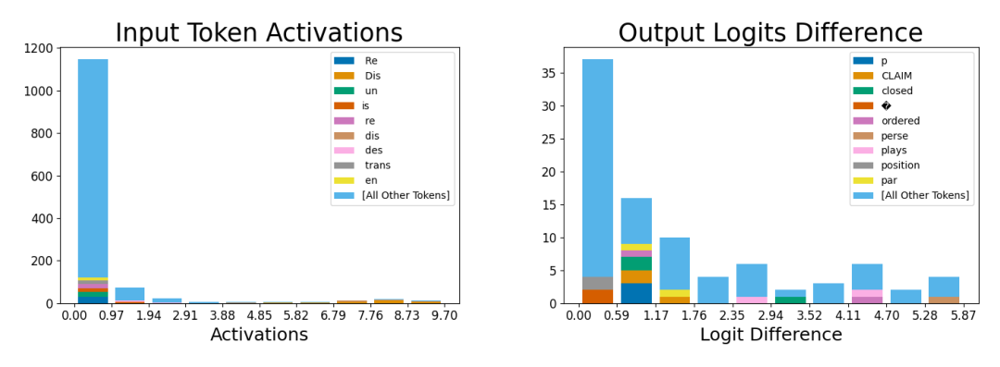

'Dis'-prefix feature: input and output histograms

Reading the input/output histograms
Same construction as the 'if' feature and the main-text apostrophe example: left bins the feature's activation strength over occurrences where it fires, stacking each bin's token count by the specific token responsible; right bins the drop in downstream logits after ablation, stacking by which next-token prediction is suppressed. Worth checking before accepting the paper's label: the left panel's labeled tokens are not only 'Dis' but several related prefix fragments ('Re', 'un', 'is', 're', 'dis', 'des', 'trans', 'en'), so the histogram alone leaves open whether the feature is specific to the capitalized bigram 'Dis' or responds more broadly to prefix-like subword tokens; as with the other feature pages, the two panels' bars are not on comparable scales to each other.
What the histograms show
In the input panel almost all activating occurrences sit near zero (an 'All Other Tokens' bar of roughly 1,150 in the first bin), but as activation strength increases the composition narrows toward the small labeled set of prefix tokens, and the highest bins (activation roughly 7.8-9.7) are made up almost entirely of them rather than 'All Other Tokens'. The output panel shows ablation most suppresses logits for tokens that complete words beginning 'Dis': 'CLAIM' (disCLAIM), 'closed' (disclosed), 'ordered' (disordered), 'perse' (disperse), 'plays' (displays), 'position' (disposition), and 'par' (dispar-). That word-completion pattern is what grounds the paper's more specific 'Dis'-bigram-prefix reading, rather than the input histogram on its own (sparse-autoencoders, §"D.2 EXAMPLES OF LEARNED FEATURES", p. 17).
Where this fits
Alongside the 'if'-in-code feature and two apostrophe-context features, this is one of Appendix D.2's additional Dictionary feature examples illustrating the range of a trained sparse-coding dictionary: from programming-language syntax to sub-word morphology, each showing input and output evidence pointing at the same interpretation, part of the paper's broader case for Monosemanticity.